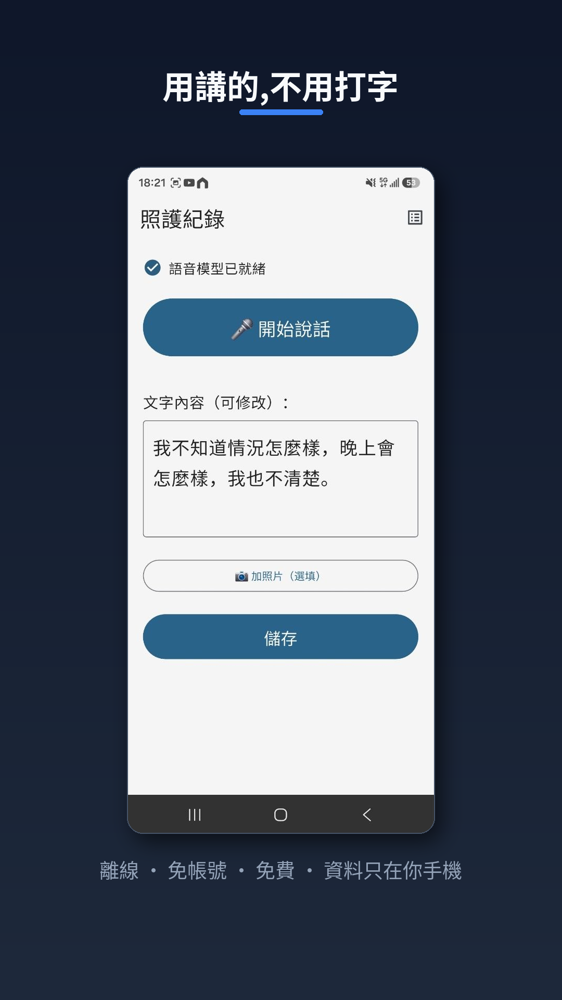
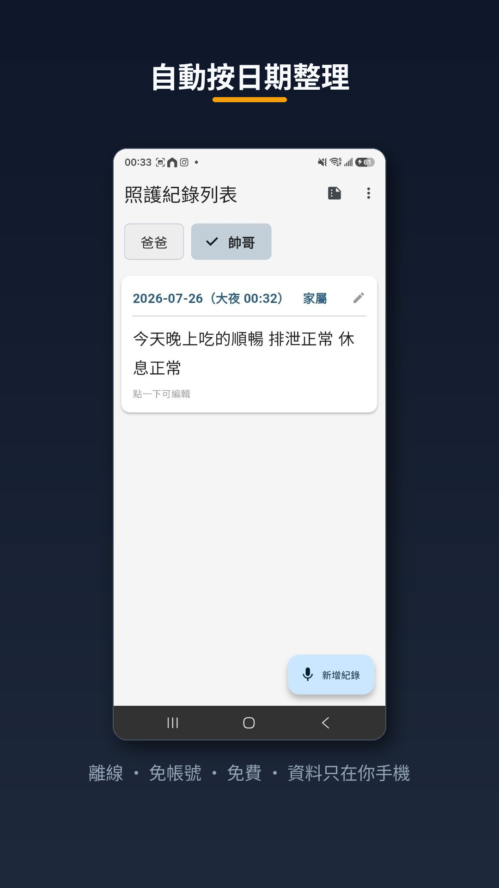
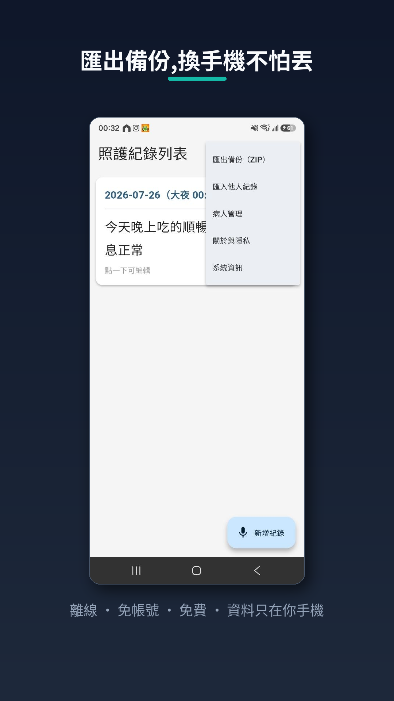
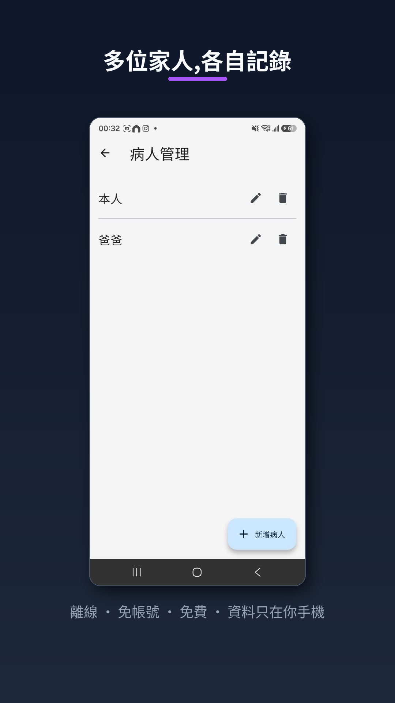
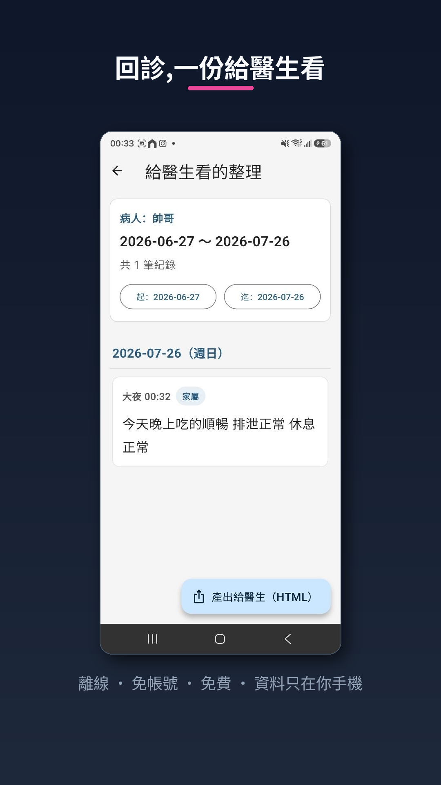

這是什麼
「照護紀錄」是給照顧家人的家庭用的離線紀錄工具。照顧一個人,每天有很多小觀察——精神、睡眠、食慾、情緒、身體狀況——這些對回診時醫生判斷很重要,但每天用打字記錄很累、也很容易斷掉。
這個 App 讓你「用講的」就能記錄:對著手機說今天發生的事,App 在你手機本機把語音轉成文字(會自動加標點),你看一眼、需要才改,就存好了。不用打字。
它是失智照護生態系裡 白板 OCR 紀錄 Bot 的家庭獨立版——不用自架伺服器、不用申請雲端金鑰,裝了就能用。
主要功能
🎙️語音記錄
說一段就轉成文字,可分多次接續、隨時編輯或刪除,不用打字。
🖼️加照片
每筆紀錄可選擇性附上照片,幫助回想當天狀況。
🗂️按日期整理
紀錄自動依日期排列,一眼看得到哪天發生什麼。
💾匯出備份
把紀錄匯出成檔案備份,換手機不怕丟;也能傳到另一支手機匯入合併。
👨👩👧多位家人
可管理多位被照顧者,各自記錄;預設單人時介面極簡,有需要才顯示切換。
🩺給醫生看
回診前產出一份乾淨、依日期分組的整理,可匯出成單一 HTML 檔用瀏覽器直接開。
App 畫面

用講的,不用打字

自動按日期整理

匯出備份,換手機不怕丟

多位家人,各自記錄

回診,一份給醫生看
隱私(我們最在意的事)
- 完全離線運作。你的紀錄、照片、語音都只留在你這支手機裡。
- 不需要註冊、沒有帳號、不收集任何個人資料、沒有廣告、不做追蹤。
- 語音辨識在手機本機完成,你的錄音不會上傳雲端。
- 要不要分享,完全由你決定。
唯一的網路使用:首次啟動會下載一次語音辨識模型(建議連 Wi-Fi),之後即可完全離線使用。
取得與延伸閱讀
目前在 Google Play 封閉測試階段,通過正式版審查後這裡會補上商店下載連結。開發歷程(手寫 OCR 六成 vs 語音的實測、離線設計、上架的 12 人 × 14 天封閉測試等真實關卡)都寫在部落格那篇。
⚠️ 本 App 是照護紀錄工具,並非醫療器材,不提供醫療診斷或建議。語音辨識可能有錯字,請自行核對。健康與用藥決定請諮詢醫療專業人員。